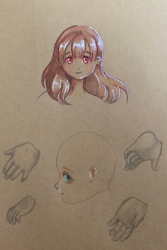
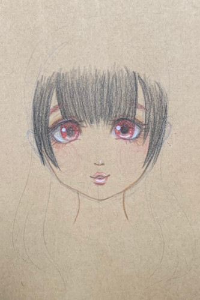

I saw a guy with an overwatch logo tattoo on the back of his calf. I can't understand why a the logo of a video game would be so important that you'd want it permanently engraved on your leg. Reminds me of my cousin's tattoo which is some adult swim show's logo.
I went a little wild with the white gel pen. Forgive me.
I sketched Sochi's profile and her hand at a few angles. I'm really bad at drawing profiles and hands so i need to practice more... I managed to drop her off the table too
I think I want my lieselotte to have natural black hair and red eyes. I saw a sarang with this color combo and I'm kinda into it. I'm also thinking i might modify her default faceup into more of a smile.
I bought some faber-castell colored pencils a few weeks ago because they were on clearance for $6.42. I was hoping to get some prismacolors eventually, but for that price I'm totally willing to try these. I got some artist's loft colored pencils for free with an awesome coupon but i wasnt impressed at all. I found some primsacolors for babby starters at the thrift store for like 70 cents (missing a third the pencils too) and love how they feel. I'm not sure if the faber-castells will live up to the primsacolors but i might end up buying a 24+ pack of those too. I dont really draw that much so theres not a good reason to invest in them but they do feel really nice...
please stop using instagram for photos. it's social media platform not a photo sharing platform. i'm pissed every time i click a link to insta and it says "please log in" and i cant see anything. these photos arent private, but instagram wont show you without an account. a pretty good number of younger people have deleted their facebook account but why not insta?? same company same shitty morals. this site is absolute garbage for anything other than pictures of your dinner and phone selfies
it bums me out volksusa only posts updates on facebook too. i'd rather check a blog page on their site. they didnt even mention the bonus hands for the latest online FCS on their website.